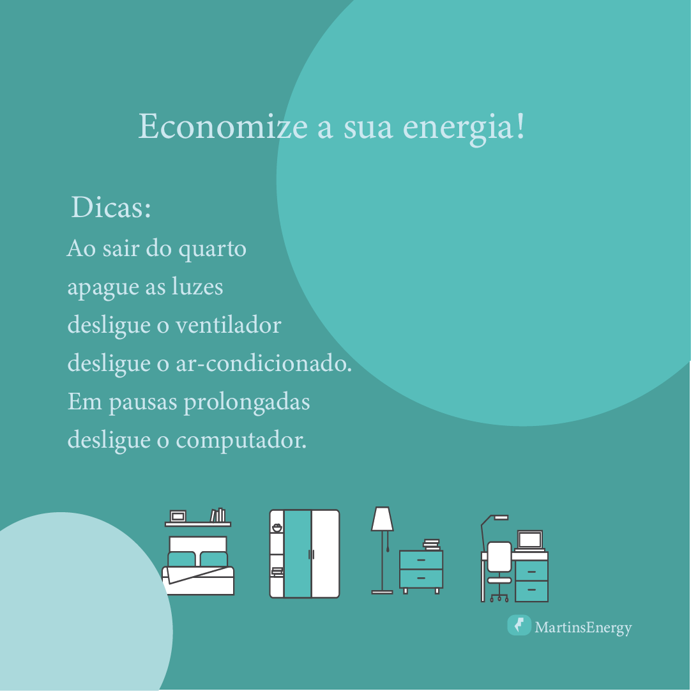
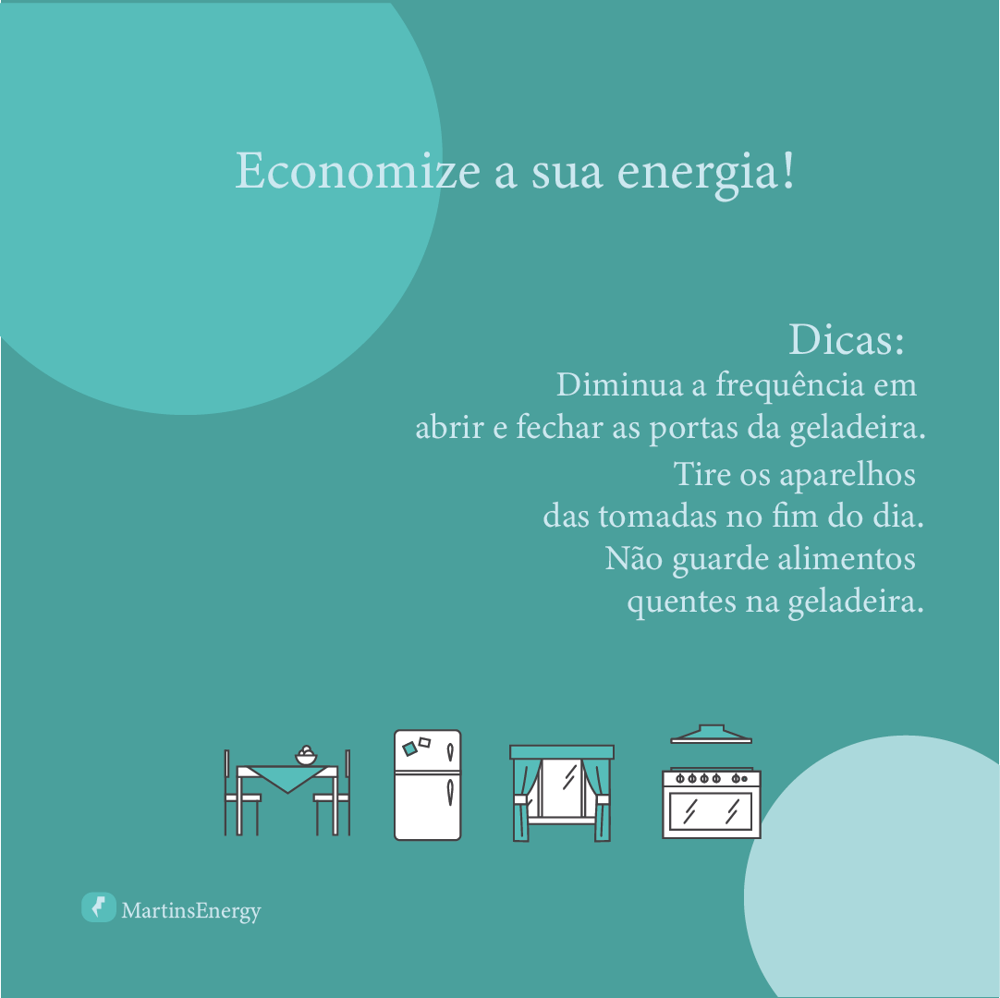
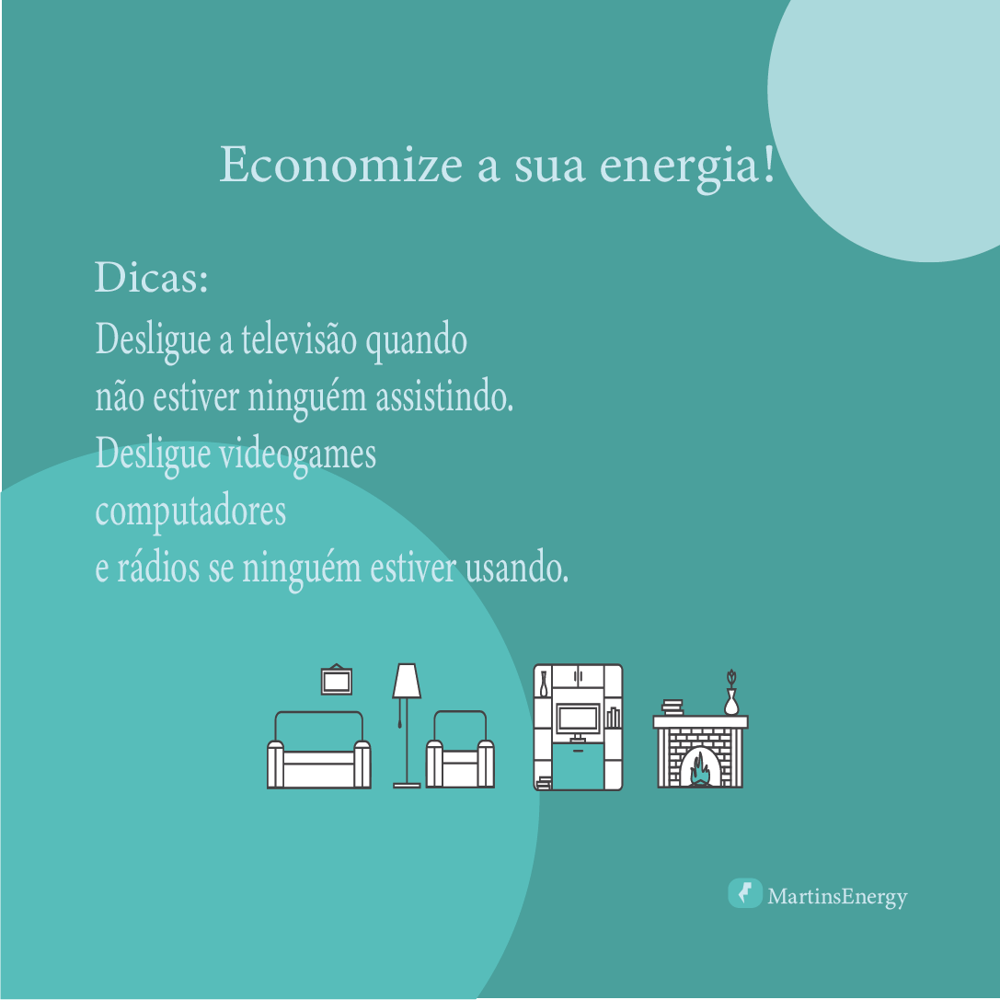
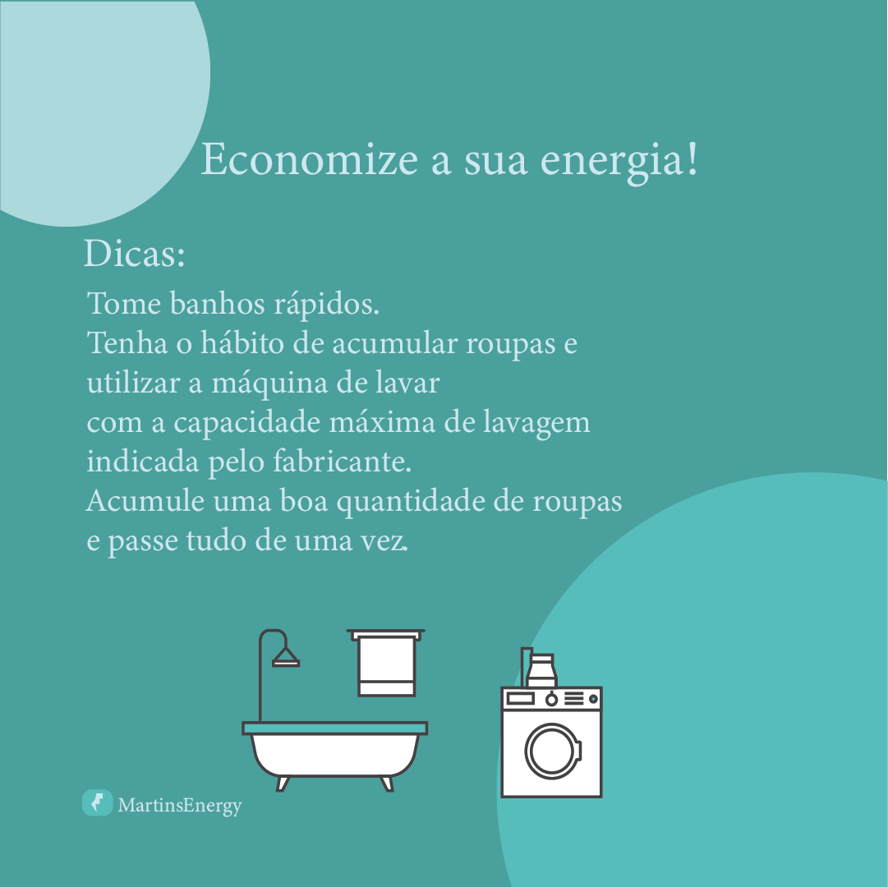

|  | Controle os gastos: Anote as contas de água, luz, telefone e gás para economizar. Faça um planejamento: Defina despesas prioritárias, tenha uma reserva financeira de emergência e diversifique os investimentos. |
| Elabore uma planilha: Colocar os gastos no papel ajuda a ter tranquilidade em relação às finanças. Mude hábitos: Faça pequenos sacrifícios e crie o hábito de aplicar mensalmente. |  |
|  | Aprenda sobre finanças: Leia blogs e acompanhe o noticiário de economia. Economize energia: Use lâmpadas LED, aproveite a luz natural, reduza o uso de aparelhos, use o ar-condicionado com moderação, economize no chuveiro e na geladeira. |
| Mantenha os equipamentos em bom estado: Faça manutenções periódicas nos equipamentos elétricos. Verifique a borracha de vedação da geladeira: Se a borracha não estiver em bom estado, a geladeira consumirá mais energia. |  |
Desenvolvido por Giovane Dias Martins IFMS Dourados